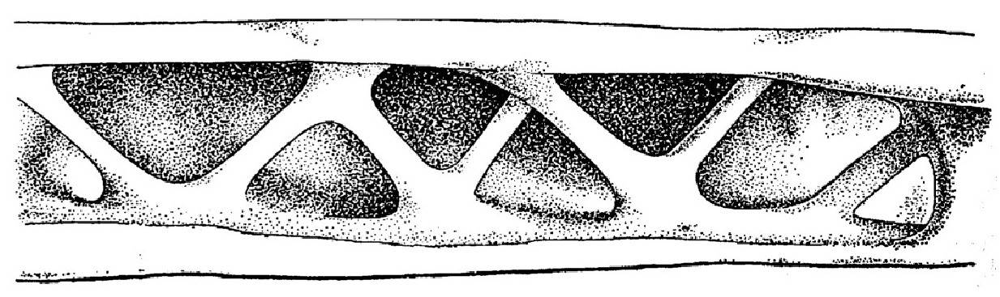
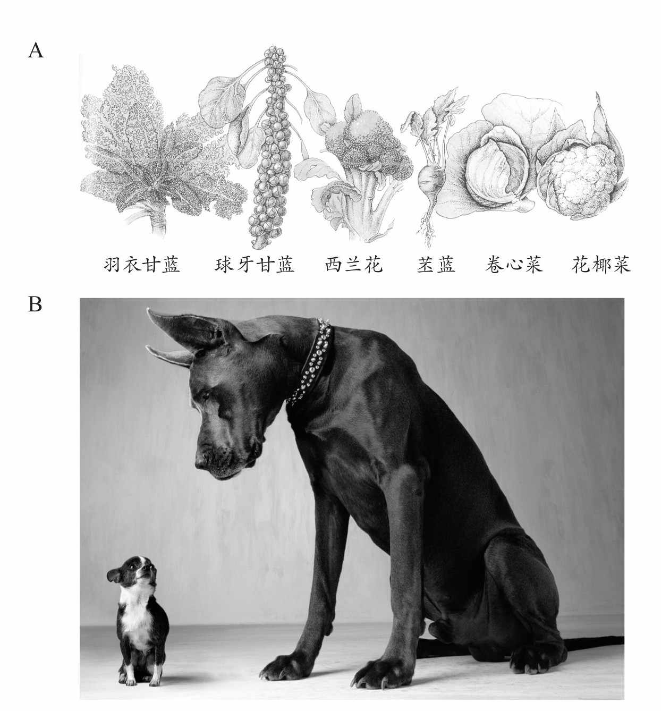
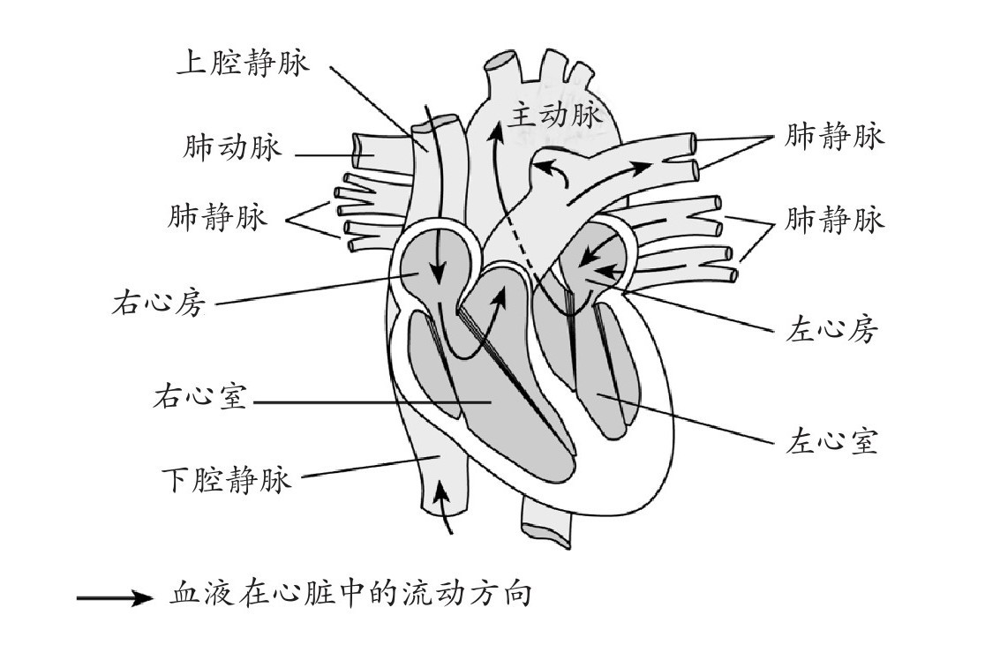
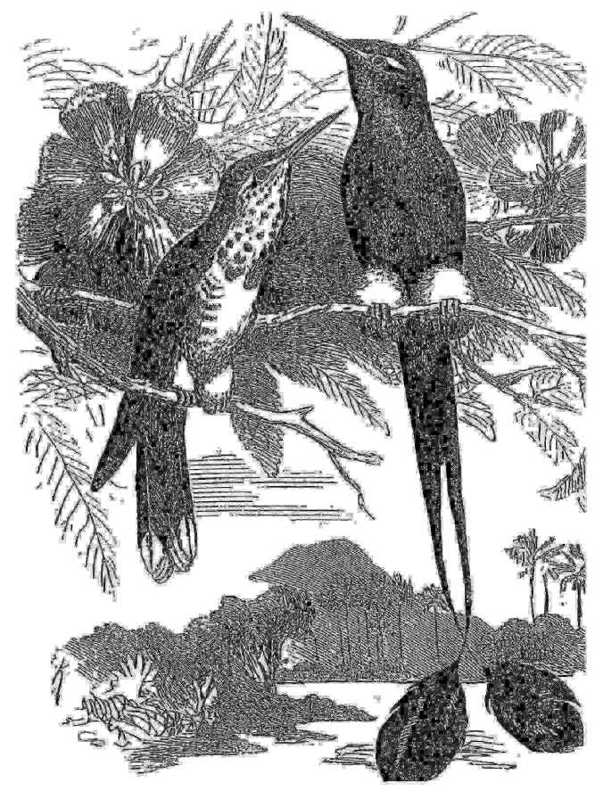

适应的问题
进化论的一个重要任务就是在生物间不同层次的相似性下解释生物多样性。在第三章中，我们强调了不同类群间的相似性，以及这些现象如何符合达尔文的后代渐变理论。进化论另一个主要的内容就是为生物的“适应”提供科学的解释：它们良好的工艺设计外观，它们与不同生活方式相适应的多样性。这些都使得本章成为本书中最长的一章。
适应的经典例子数不胜数，我们将举出其中的几个来说明问题的本质。不同类型的眼睛的多样性本身就非常令人惊讶，不过与不同动物所生活的不同环境相联系来看就可以理解。在水底使用的眼睛与在空气中使用的不同，捕食者的眼睛具有特殊的适应性，能够看穿被捕食者进化出的伪装。许多水底的捕食者捕食透明的海洋生物，它们的眼睛有着特殊的增强对比度的功能，包括紫外线透视以及偏振光透视。另一个著名的适应例子是鸟类翅膀中中空的骨头，它们的内部支杆与飞机机翼非常相似（图14）；还有就是动物关节处精巧的结构，其表面使得移动的部分能够彼此顺滑地移动。
动物与食性相关的适应以及它们所捕食猎物的反馈性适应还有许多其他例子。蝴蝶拥有长长的口器，用来直达花朵的深处、吸食花蜜；相应地，花朵用艳丽的颜色与特殊的气味吸引昆虫，并为它们提供花蜜。青蛙与变色龙有着长长的舌头，能够通过黏性的舌尖捕食昆虫。许多动物的适应性能够帮助它们逃避捕食者，其外表则取决于所生存的环境。许多鱼类拥有银色的外观，这使得它们在水里不容易被发现，但是陆地动物很少会有这样的颜色。一些动物有着隐蔽色，与树叶或树枝，或者其他有毒有刺的动物颜色相近。

图14 秃鹫中空的骨骼，以及它内部加固的支杆。
适应性在动物、植物以及微生物的许多细节部分同样能发现，包括每一个层次，小到细胞的机制及其控制（我们在第三章中讲述过）。例如，细胞分裂与细胞迁移是由蛋白分子组成的微小发动机所驱动。遗传物质在产生新的细胞时被复制，此时新产生的DNA会进行校对工作，这大大降低了有害突变发生的概率。细胞表面的蛋白复合物选择性地允许某些化学物质透过，而阻止了另一些化学物质的进入。在神经细胞中，这种控制被用于调节穿越细胞表面的带电金属离子流，从而产生沿着神经传递信息的电信号。动物行为模式是它们神经活动模式的最终输出结果，无疑是对它们生活方式的适应。例如，在鸟类中，巢寄生性鸟类例如杜鹃会将宿主原本的蛋或幼鸟移出巢穴，使得宿主抚养它们的后代。相应地，宿主鸟类变得更为警觉以适应这一现象。种植真菌“花园”的蚂蚁进化出了一些行为，包括清除掉污染它们腐烂叶子的真菌孢子。甚至生物的老化速率都与动植物生长环境相适应，这一点我们将在第七章中进行阐释。
在达尔文与华莱士之前，这种适应性似乎是由造物主创造的。似乎没有其他方法能够解释生物体各方面令人惊讶的精细而完美的细节，正如一块手表的复杂程度不可能是纯自然的产物。18世纪神学家们提出“创世论”来“证明”造物主存在，其主要依据就在于没有其他解释，而“适应”一词的提出是用来描述生物都拥有对它们有用的结构这一现象的。我们要明白，将这一现象表述为“适应”将导致一个问题。认识到适应需要一个解释，这对于我们了解生命有着重要的作用。
毫无疑问，动植物与其他自然产物如岩石或矿物是不同的，我们在“动物、植物、矿物” [4] 这一游戏中已经了解了。但是创世论忽视了这种可能性：在产生矿物、岩石、山川的作用之外，可能还会有自然的过程，它们能够将生物解释为复杂的自然产物，而不需要造物主的参与。对适应来源的生物学解释取代了造物主的观点，并成为后达尔文进化学说的中心思想。在本章中，我们将描述适应的现代理论以及它的生物学原因与基础。这些都基于我们在第二章中所概述的自然选择理论。
人工选择与可遗传变异
达尔文最早提出并强调的一个高度相关的观察结果是，人类可以有规律地对生物进行改变，能够产生与我们在自然界所见相同的外表。这通常来源于对具有所需要特征的动植物进行人工选择，或是选择性育种。在相对于进化的化石记录而言较短的时间内即可培育相当大的变化。例如，我们已经产生出各种不同品种的卷心菜，包括一些奇特的品种例如花椰菜或西兰花，它们都是产生巨大花朵、形成巨型头部的突变体，而像球芽甘蓝这样的品种，则具有不同寻常的叶子发育（图15A）。与之相似，许多种类的狗是由人类培育的（图15B），正如达尔文所指出的，它们之间的差异与自然界中两种不同物种间的差异很类似。然而，尽管所有的犬属动物（包括土狼与豺狼）都是近亲，也可以进行杂交，不同品种的狗并不是由不同的野狗物种驯化而来，而是在过去一两千年（几百个狗世代）的人工选择下，来自一个共同的祖先——狼。狗基因的DNA序列基本是狼的序列的子集，而土狼（据化石判断，它们的祖先在100万年前与狼的祖先分离）无论与狼还是狗的差异都比差异最大的狼/狗还要大上两倍。狗与狗之间相同基因的序列差异可能在狗与狼分离开之后产生，这种差异可以用来推断它们的分离的发生时间（见第三章）。结论是狗在远超过1.4万年之前就与狼分离——这个时间由考古证据所证实，但是不超过13.5万年前。
人工选择的成功可能是由于在种群与物种中存在可遗传的变异（我们在第三章中所描述的正常个体间细微的区别）。即使没有任何遗传的概念，人们已经让那些具有他们所喜爱或有用特征的动物进行繁殖，在经过足够多的世代之后这个过程已经产生彼此间差异巨大的株系，而它们与最初驯化的祖先形态也截然不同。这清晰地说明驯化物种中的个体彼此间必定是不同的，有许多不同能够传递给它们的后代，这意味着它们是可遗传的。如果这些不同只是因为动物或植物被对待的方式不同，选择性育种与人工选择对于下一代则没有影响。除非这些不同能被遗传，否则只有通过改进培育方式才能提高品种质量。

图15 A.一些卷心菜栽培品种的变异种。B.不同品种的两只狗的大小与外形差异。
每个你所能想到的性状都能够在遗传上发生变化。众所周知，犬类的不同品种差异不只体现在外观与大小，还体现在心理特质例如性格与气质上：有一些比较友善，而其他的一些则很凶猛，适合作为看门犬。它们对于气味的兴趣不同，它们有些倾向于叼东西，有些喜欢游泳；智力上也同样存在差异。它们所易感染的疾病也不同，一个著名的例子就是斑点狗容易患上痛风。它们的衰老速率甚至也存在差异，有些品种例如吉娃娃，有着令人惊异的长寿（寿命几乎与猫一样长），而其他的一些品种例如大丹狗，寿命则只有吉娃娃的一半。当然，所有这些特质都会受到环境因素的影响，例如良好的照顾与治疗，但它们依然受到遗传的强烈影响。
相似的遗传差异在其他许多家养品种中也同样出现。另一个例子——不同品种苹果的品质就是可遗传的差异。它们包括了对不同人类需求例如早熟或晚熟、适合做菜或是生食的适应，以及对不同国家的不同气候的适应。与犬类的例子类似，在人工选择进行的同时，其他选择过程也同样在苹果中进行，不是所有令人喜爱的特征都会臻于完美。例如，考克斯苹果是一种非常好吃的苹果，但是它非常容易受到病菌的侵害。
可遗传变异的种类
人工选择的成功有力地证明了动植物的许多性状差异是可遗传的。众多遗传学研究证明了在自然界中许多生物同样具有可遗传的性状多样性，包括动物、植物、真菌、细菌及病毒的诸多物种。多样性来源于基因DNA序列的随机突变过程，此过程已得到充分认识，与那些引起家族性遗传疾病的过程（第三章）相类似。这些突变中的大多数可能是有害的，例如人类或家畜的遗传疾病，但是有时候也存在着有益的突变。这些突变已使得动物对于疾病具有抵抗力（例如家兔中兔黏液瘤病抗性的进化）。这些也带来了当今社会的一个重要问题：害虫们进化出了对化学药剂的抗性（包括老鼠对于杀鼠灵的抗性，寄生在人类与家畜身上的寄生虫对于驱虫药的抗性，蚊子对于杀虫剂的抗性，以及细菌中的抗生素抗性）。正是由于它们与人类或动物的福祉息息相关，人们对它们中的许多实例已经进行了非常仔细的研究。
可遗传的差异在人类中也有众所周知的事例。变异可能会表现为“离散的”性状差异，例如我们前文中提到的眼睛与头发的颜色。这些是由单个基因中的差别控制的变异，不受环境因素的影响（或是影响极其微小，例如金发人群的头发被日光所漂白）。诸如此类的常见多样性被称作多态性 。有些情况例如色盲也是简单基因差别，但是在人群中属于非常罕见的变异。甚至连行为方式都可能会遗传。一个火蚂蚁群应该有一个还是多个蚁后，这可能是由单个基因上的一个差异控制的，这个基因编码的蛋白质连接的化学物质参与个体识别。
“连续的”变异同样在种群的许多特征中十分明显，例如人们的身高与体重的渐变。这种变异通常受环境影响较大。20世纪许多不同的国家中都出现了后代身高的增加，这并不是因为遗传的改变而是生活环境的变化，包括更好的营养条件和童年时期严重疾病的减少。然而，在人类种群的此类特征中同样存在某种程度的遗传因素。这是通过对同卵双胞胎和异卵双胞胎的研究获得的。异卵双胞胎是普通的兄弟姐妹关系，只不过是碰巧在同一时间怀胎，他们之间的差异与任何兄弟姐妹一样；但是同卵双胞胎来自于一个一分为二的受精卵，在遗传学角度上是完全一样的。人们业已证明，同卵双胞胎比异卵双胞胎在许多特征上都更为相似，这肯定是由于他们的遗传相似性（当然，要注意对同卵双胞胎的照顾方式不可以比异卵双胞胎的更相像；例如，应该只研究相同性别的两种双胞胎）。尽管环境影响非常重要并且明显地经常存在，各式各样的证据都一致表明许多特征变异都需要一定程度的遗传基础，包括智力方面。人们已经在众多生物的各类特征中验证了可遗传变异的存在。甚至连动物在阶级中的位置，或者说社会等级，也是可遗传的；这种现象已经在鸡群与蟑螂中得到体现。连续遗传变异性的大小可以通过不同程度的近亲间的相似性进行测定。这在动物与农作物育种中发挥了很大作用，饲养员们能够通过这种方法预测不同亲本产生后代的性状，例如奶牛的产奶量，由此对育种进行规划。
遗传差异归根到底就是DNA“字母”的差异。这通常不会导致蛋白质的氨基酸序列改变。当不同个体间相同基因的DNA序列进行比较时，我们就能够发现差异，尽管与不同物种间的序列差异（第三章中讨论过这种差异，见图8）相比通常要小得多。例如，第三章中提到的，可以将来自不同个体的葡萄糖-6-磷酸脱氢酶的基因序列进行比较，可能不存在任何差异（那么就没有多样性）。如果有些种群中的个体存在变异的基因序列，那么在部分比较中将会展现出差异。这被称作分子多态性。遗传学家通过比较种群中个体间存在差异的DNA序列的小片段，对这种多样性进行测定。在人类中，当比较不同人之间相同的基因序列时，通常我们会发现不足0.1%的DNA字母存在不同，而与之形成对比的是人类与黑猩猩间的差异通常达到1%左右。在一些基因中多样性较高，而在另一些中则相对较低，正如我们所预测的，那些可能不那么重要的区域的不编码蛋白质的基因变异通常要高于编码蛋白质基因的变异。与大多数其他物种相比，人类的变异性相当之匮乏。例如，DNA多样性在玉米中更为常见（超过2%的玉米DNA字母是可变的）。
物种中变异性的分布能够为我们提供有用的信息。要繁殖不同性状的狗时，只有亲本的性状十分一致，才能进行育种。这是由于严格的纯血统规则，它对犬类的杂交进行控制，禁止不同品种间出现“基因流动”。一个品种所需要的特性，例如衔回猎获物，便只会在这一个品种中进行充分培育，不同的品种彼此相异。这种品种间的隔离是不符合自然规律的，不同品种的狗能够愉快地进行交配并产下健康的后代。狗的许多变异性相应地是在品种间产生的。许多自然界的物种生活在不同的地理隔绝的种群中，正如我们所预料的那样，此类物种作为整体的多样性比生活在一起的单一种群中的多样性要大得多，因为在种群间存在着差异。例如，某些血型在某些人种中更为常见（见第六章），对于许多其他基因变体来说也是如此。然而，与犬类品种不同，在人类及自然界的其他许多物种中，种群间差异与种群内部的多样性相比要小得多。这种差异是因为人类在种群间能够自由移动。这些基因结果的一个重要含意就是，人类种族是由我们基因组中的极小部分基因区分开的，在全球范围内，我们大部分的遗传结构的变异有着相似的范围与异质性。现代社会愈来愈高的移动性正在快速降低种群间的任何差异。
自然选择与适应
自然条件下进化论的一个根本理论就是，一些可遗传的性状差异影响着生存与繁殖。例如，正如为了速度而对赛马进行筛选（通过将冠军马与其近亲进行杂交），羚羊也天生就被用速度筛选过，因为只有那些不被捕食者吃掉的个体才能繁殖下一代。达尔文与华莱士意识到了这个过程能够解释对自然条件的适应。我们通过人工选择改造动植物的能力取决于这种性状是否可遗传。如果存在可遗传的差别，那么自然界中那些成功的个体同样也会把它们的基因（通常还有它们优秀的特质）传递给下一代，而下一代就相应具备了适应性的特质，例如速度。
为了简洁，也为了能让人用普通名词思考，“适应性（fitness）”一词经常会被用于生物学写作中，代表生存及繁殖的总能力，不需要详述所提及的是哪些性状（正如我们用“智力”一词来代表一系列不同的能力）。适应性包括生物体的诸多不同方面，例如，速度只是影响羚羊适应性的一个因素。警惕性与发现捕食者的能力也很重要。然而，仅生存是不够的，繁育后代的能力，例如为后代提供保障与照顾，对于动物的适应性而言同样重要；对于开花植物的适应性而言，吸引传粉者的能力尤为关键。因此适应性一词可以被用来描述对范围极广的不同性状的选择。正如“智力”所遭遇的，“适应性”一词的笼统性也使得它引起误读与争议。
为了了解哪些性状可能在生物体的适应过程中发挥重要作用，我们必须深入了解它的生活规律与生存环境。同样一种特性，在一个物种身上可能会使其具有良好的适应性，而对另一个物种则不尽然。例如，对于一只通过隐蔽色来躲避捕猎者的蜥蜴而言，速度并不是适应的重要因素。对于一只居住在树上的蜥蜴而言，善于抓住树枝比跑得飞快要重要得多，因此短腿相比长腿而言，更具有适应性。对于羚羊而言速度是适应性的，但站住不动避免被捕食者发觉也是许多动物躲避猎杀的一种选择。另外一些动物通过吓跑对方来躲避捕食者：例如，有些蝴蝶的翅膀上有眼状班纹，它们能够突然展开而把鸟类吓跑。植物显然不能移动，但它们也有各式各样的方法来躲避被吃掉的命运，例如有些吃起来苦涩，而有些则长满了刺。所有这些不同的性状都可能会提高生物的生存和/或繁殖的概率，从而提升它们的适应能力。
正如我们在第二章中所表明的，考虑到众多性状的遗传变异性，以及环境因素的不同，自然选择不可避免地会发生，而种群与物种的遗传组成将会随时间变化。这种改变通常会以年为单位缓慢进行，因为种群中的一个遗传变体从稀有变成普遍，通常需要许多代的时间。在动植物的繁殖过程中，常会发生严苛的选择（例如，当疾病使某畜群或作物中的大部分病死时），但是改变依然要花费许多年时间。据估计，玉米是在约一万年前被驯化的，但是现代的巨型玉米棒却是近代的产物。尽管进化的改变以年为单位来看非常缓慢，在化石记录的时间尺度上，自然选择造成的改变却是迅速的。有益的性状在种群中传播开来的速率一开始可能极低，用时则短于地层中两个相邻层之间的时间（一般至少几千年，见第四章）。
尽管相对于我们的生命而言，自然选择发生得太过缓慢，我们通常看不到它的发生，但是自然选择从未停止。甚至我们人类也还在进化。例如，我们的饮食结构已与我们的祖先不同，因此尽管我们的牙齿并不十分坚硬，但是它很适应现代柔软的食物。许多现代食物的高含糖量容易导致蛀牙，甚至是致命的脓肿，但是坚硬的牙齿已不是自然选择所必须的了，因为牙医能够解决这些问题，或者是换上假牙。正如其他如今不再有强烈需求的功能可想而知会发生改变，我们的牙齿可能有一天也会退化。我们的牙齿已经比我们的近亲黑猩猩要小得多，我们还没有阻止它们继续变小的理由。我们的饮食中过量的糖分还导致继发性糖尿病发病率的上升，这种病的致死率非常高。过去，这种疾病主要发生在过了育龄的成人身上，但是现在发病的年龄正持续提前。因此，为了适应我们饮食习惯的改变，一种新的（或许还很强烈）选择压力正趋向于改变我们的代谢特征。在第七章中，我们将展示这些人类生活中的改变是如何使人们进化得越来越长寿的。
适应性的概念经常被人们误解。当生物学家尝试对这个词进行解释时，他们通常会使用与我们日常所说的“适应”相关的例子，例如羚羊的速度。如果我们举鸟类那中空而由支杆交叉强化的轻质骨骼做例子，可能就不那么容易混淆（图14）。自然选择理论是这样解释这种看起来设计精良的结构的：当飞行能力进化时，有着更轻便骨骼的个体的生存几率会比其他个体略微高一些。如果它们的后代继承了这种轻便的骨骼，那么在数代之后的种群中这个特征就会增多。这与人工育种是相似的，在人工育种中饲养员们筛选跑得最快的狗，最终使得所有的灵缇犬有着纤长的腿部。这种腿在跑起来时比短腿更有效率，灵缇犬的腿与羚羊或其他跑得快的动物的腿十分相像，而这些动物都是在自然选择下进化而来的。就算不引入“适应性”的概念，我们也能准确地对自然选择与人工选择进行描述。自然选择就意味着特定的可遗传变体可能会优先被传递给后代。携带有削弱生存或繁殖能力基因的个体，较携带有提升生存或繁殖能力基因的个体而言通常没有那么多机会将基因传给下一代。“适应性”仅仅是一个有用的缩略词，用来概述“性状有时会影响生物的生存和/或繁殖概率”这一思想，且不用特意指出某个性状。在建立自然选择影响种群基因组成的数学模型时，这个概念也非常有用。这些模型的结论为本章的许多论述提供了严谨的基础，不过我们在此不做赘述。
为了说明对于有益突变的选择，我们可以将目光投向人类与老鼠的“军备竞赛”。我们尝试各种针对老鼠的毒药，而老鼠则进化出抗性。杀鼠灵通过阻止凝血来杀死老鼠。它抑制了维生素K代谢过程中一种酶的活性，而维生素K对于凝血与其他许多功能都十分重要。有抗性的老鼠一开始十分稀少，因为它们的维生素K代谢被改变了，这降低了它们生长与存活的概率。换句话说，这就是产生抗性的代价 。然而，在施用了杀鼠灵的农场与城市中，只有那些有抗性的老鼠能够存活下来，因此尽管需要付出代价，自然选择的力量依然很强大。由此，带有抗性的基因在老鼠种群中传播至很高的携带率，尽管此基因的副作用使得这个基因不能传播到每一个个体。然而，近期的情况是进化出了一种新型的似乎无副作用，甚至可能有益（没有了毒性）的抗性。因此，在老鼠的生存环境改变的情况下，进化将会持续发生。
变异与选择在许多系统中都十分常见，不仅仅是生物个体。遗传物质中某些特定的组分被保留下来，并不是由于它们能够增强携带它们的生物的适应性，而是由于它们可以在遗传物质本身当中复制增殖，就像生物体中的寄生虫。人体中有50%的DNA被视为归于此类。另一个人体中自然选择驱动进化改变的重要例子是癌症。癌症是一种细胞无视身体其余部分利益、自顾自无限增殖的疾病。这种疾病通常由一种能够增大其他基因突变概率的突变（例如，第三章中所提到的校对系统失效，这种系统检查DNA顺序，阻止突变）所导致。一旦突变发生的频率增大，其中的一些将影响细胞的增殖速率，则可能会出现一个快速增殖的细胞系。随着时间的推移，携带有其他基因突变的细胞不断增殖出越来越多的细胞，生长越来越快，最终癌症通常变得越来越严重。癌症细胞同时还能对抑制它们生长的药物产生抗性。如同众所周知的艾滋病患者中艾滋病病毒的抗药性进化一样，获得突变从而免受药物抑制的癌症细胞同样能比初始类型的细胞长得更快，进而使癌症无法缓和。这就是为什么在病情缓解后重新开始药物治疗效果往往甚微的原因。
在另一个极端，拥有不同性状的物种的灭绝速率可能存在不同，即在物种层面上可能也存在着选择。例如，个头较大的物种的种群规模与繁殖速率通常较低，相对于个头较小的物种而言更容易灭绝（见第四章）。与之相对，相同物种中，不同个体间的自然选择通常更青睐较大的个头，这可能是由于较大的个体在食物或配偶的竞争中占据更大的优势。相关物种身体大小的一系列分布情况可能是两种不同类型的选择共同作用的结果。然而，物种内部对个体的选择也许是最为重要的因素，因为它首先产生了不同大小的身体，而且它发挥作用通常比物种层面的选择要快得多。
选择对于非生物事件而言也十分重要。在设计机器与电脑程序时，想要达到最优设计，一种非常有效的方法就是不断地对设计进行随机而微小的调整，保留下效果良好的部分，删除其他部分。这种方法越来越多地被运用于解决复杂系统的设计难题。在这个过程中，设计师不考虑整体规划，只考虑所需要的功能。
适应与进化史
自然选择的进化理论将生物的特性解释为连续变化的积累结果，每种变化都提升了生物的存活率或是繁殖成功率。哪些改变可能发生取决于生物的先前状态：突变只能在一定范围内对动植物的发育进行修饰，这个范围是由形成成熟生物的现有发育程序所限定的。动植物育种人所进行的人工选择的结果说明，改变身体部分的大小与形状，或是明显改变生物的外在特征如外表颜色（例如在狗的不同品种中），相对而言较为容易。显著的改变很容易由突变引发，实验遗传学家们也很容易创造一种老鼠或是果蝇株系使其与正常形态之间的差别比野生种类彼此之间的差别大得多。例如，在实验室中，我们可以制造出一只有着四只翅膀而不是正常的两只翅膀的果蝇。然而，这些重大改变通常会严重影响生物的正常发育，降低它们的生存与繁殖成功率，因此不大可能被自然选择所青睐。甚至连动植物育种人都会避免此类现象的出现（尽管这类突变已经被用于培育不寻常的鸽子与狗，这些动物的健康对于育种者来说没有对于农民那么重要）。
由于上述原因，我们推断进化将向着先前的方向微调前进，而不是突然跳跃到一个全新的状态。这在那些需要许多不同组件共同调整的复杂特征，例如眼睛（我们将在第七章中详细讨论）中体现得尤其明显。如果其中一个组件发生了彻底的改变，即使其他部分未发生改变，它们的协作也将受到影响。新的适应性进化时，通常都是在原先结构上的修改版本，而且一般最开始并不会处于最佳状态。自然选择就如同一个工程师，对机器修补、改正以提高性能，而不是坐下来计划好全新的设计。现代的螺丝刀能够用于精密的加工，它有一系列的刀头能够适用于不同的用途，但是螺钉的祖先只是一个由大钉通过一端孔洞旋转的粗纹螺栓。
尽管我们经常惊讶于生物的适应性的精密与高效，它们之中依然存在许多笨拙的修补——一些只有放在它们祖先身上才能理解的特征告诉了我们这一点。画家用肩上的翅膀来表示天使，使得它们能够继续使用上肢。但是所有真实存在的能飞或能滑翔的脊椎动物的翅膀都是改良的前肢，因此翼龙、鸟类以及蝙蝠，都不能够使用前肢的大部分原始功能。类似地，哺乳动物心脏与循环系统有着神奇的特征，反映着这个系统从起源至今逐步修补的历史。最初在鱼体内从心脏泵出血液到达鱼鳃，然后再到达全身（图16）。循环系统的胚胎发育清晰地透露了它进化层面的祖先。
有些时候，在不同的类群中，针对同一个功能性的问题，可能会独立进化出相似的解决方案，导致十分相似的适应性，然而由于不同的进化历史，它们的细部特征又大为不同，例如鸟类与蝙蝠的翅膀。因此，尽管不同生物具有相似性通常是由于它们具有亲缘关系（如同我们与猿），两个亲缘关系很远的物种生活在相似的环境中有时也会比亲缘关系更近的物种看起来更为相像。如果被这种形态学上的相似与差异误导，可以通过DNA序列的相似与差异发现它们真实的进化关系，正如我们在第三章所述。例如，几种不同的江豚在世界上几个不同区域的大河里进化生存。它们共有某些与公海中物种区别开来的特征，特别是简化的眼睛，因为它们生活在混浊的水中，更多地依靠回声定位而不是视力导航。DNA序列比对结果表明，某种江豚物种与和它生活在同一个区域的海豚间的关系，比它与生活在其他地方的江豚间关系更为紧密。相似的环境导致相似的适应是说得通的。

图16 哺乳动物心脏与血管高度复杂的结构。注意肺动脉（输送血液至肺部）笨拙地扭曲在主动脉（将血液输送至身体其他部位）与上腔静脉（将脑部的血液运送回心脏）之后。
尽管存在许多相似性，自然选择与人工设计过程依然存在几点差异。一点就是进化是没有前瞻性的；生物只针对一时的主要环境情况发生进化，这样产生的性状也许会在环境剧烈改变时导致它们的灭绝。正如我们将在本章稍后部分所展示的，雄性之间的性竞争将产生一些严重减弱它们生存能力的结构；很有可能，在某些情况下，环境变得不利于生存，存活率降低至这个物种最终无法继续维持下去，拥有多只鹿角的爱尔兰大角鹿就是这样灭绝的。长寿生物的生育力通常进化至极低水平，例如秃鹫这样的猛禽，每两年产下一个后代（我们将在第七章中深入讨论）。如果环境适宜的话，这些种群将会生活得很好，繁殖母禽的年死亡率也很低。然而，一旦环境恶化、死亡率升高，例如遭到人类侵扰，这可能会导致种群数量的急剧减少。现在这种情况依然发生在许多物种身上，已经导致了许多曾经数量巨大的物种的灭绝。例如，在19世纪，繁殖缓慢的北美旅鸽因捕猎灭绝，尽管它最初的数量曾达到几千万只。有些物种进化成为极为特殊的栖息地的领主，但是一旦由于气候原因，这块栖息地消失，它们也同样容易灭绝。例如，中国熊猫的生存受到威胁，因为它们繁殖缓慢，而且以一种只生长在特定山区的竹子为食，而这种竹子现在正遭到砍伐。
自然选择同样并不必然产生完美的适应。首先，可能没有时间将一种生物机制的各个方面调整到最好的状态。当选择的压力来源于一对物种（例如宿主与寄主）间的相对作用时，这种现象将更为明显。例如，宿主抵抗感染能力的加强增大了寄主克服这种抗性的选择压力，强迫宿主进一步进化出新的抗性，如此循环往复。这就是进化的军备竞赛。在这种情况下，没有任何一方能够长时间保持绝对的适应。尽管我们的免疫系统抵抗细菌与病毒侵扰的功能卓越，我们依然容易受到最新进化的流感与感冒病毒菌株的侵害。其次，正如我们之前所提到的，进化的修修补补的特性，即只能在已经产生的东西上进行调整，限制了进化所能达到的效果。脊椎动物眼睛中负责从光敏细胞中传导信号的神经位于视网膜细胞的前部而不是后部，这从设计角度来看，似乎十分可笑，但是这是由于眼睛的这个部分是作为中枢神经系统的分支发育而来，这种发育方式最终造成了这样的结果（章鱼的眼睛与哺乳动物的类似，但是安排要更为合理，它的光敏细胞位于神经的前部）。第三，一个系统某一方面功能的提升可能会造成其他方面功能的减弱，正如我们讨论对杀鼠灵的抗性时提到的。这种情况可能会阻碍适应的改良。我们将在本章后面的内容以及第七章中讨论衰老时提到一些其他的例证。
发现自然选择
达尔文与华莱士在不了解自然选择在自然界中产生作用的例证的情况下，提出自然选择是适应性进化的原因。在过去的50年间，人们发现了许多自然选择的实例并进行了仔细研究，有力地支持了该学说在进化论中的中心地位。我们在此只讨论其中的几个例子。现代社会中一种非常重要的自然选择正在使细菌对于抗生素产生日益增强的抗药性。这是一个被重点研究的进化改变，因为它威胁到了我们的生命，同时发生得非常迅速且（很不幸地）反复出现。在笔者写下本段文字的这天，报纸的头条就是：在爱丁堡皇家医院里发现了具有甲氧西林抗性的葡萄球菌。抗生素一旦被广泛使用，不久就会出现有抗性的细菌。抗生素在1940年代被首次广泛使用，之后不久微生物学家们就提出了对于细菌抗药性的担忧。《美国医学杂志》（其受众主要为医生）上的一篇文章就写道：对于抗生素的滥用“充满了对具有抗性的菌株进行筛选的风险”；在1966年（那时人们还没有改变他们的做法），另一位微生物学家写道：“难道没有办法引起普遍关注，以对抗生素抗性发起反攻吗？”
抗生素抗性的迅速进化并不令人惊讶，因为细菌繁殖非常迅速，且具有庞大的数量，因此任何能够使细胞产生抗性的突变都必定会发生在某个种群的某些细菌中；一旦这些细菌能够在突变带来的细胞功能改变下存活下来并且繁殖，一个具有抗性的种群就会迅速建立起来。人们可能希望抗性对于细菌而言代价昂贵，在老鼠对于杀鼠灵的抗性中最初的确如此，但是对于老鼠，我们不能指望这种情况持续太长时间。细菌迟早会进化得能够很好地适应当前抗生素且自身不付出重大代价。因此，我们只有少量使用抗生素，保证它们只用在确实必要的情况下，并确保所有的感染细菌都在还来不及进化出抗性前就被迅速杀灭。如果在一些细菌还存活的情况下就停止治疗，它们的种群中不可避免地就会包含一些具有抗性的细菌，这些细菌就可能会感染其他人。对抗生素的抗性还可以在细菌间，甚至是不同物种的细菌间传递。对家畜使用的用来减少传染病以及促进生长的抗生素能够引发抗性传播至人类病原细菌。甚至这些后果都不是问题的全部所在。具有抗性突变的细菌不是它们种群之中的典型代表，但是在一些情况下它们有着高于平均水平的突变率，这使得它们能够对选择压力更快地响应。
不论何时，只要人们用药物去杀灭寄生虫或是害虫，对药物或杀虫剂的抗药性就会被进化出来。事实上，人们已经对成百上千例微生物、植物、动物的案例进行了研究。当艾滋病人使用药物进行治疗时，甚至艾滋病毒都会突变，进化出抗性使得治疗最终失效。为了避免这种情况发生，经常使用两种而不是一种药物进行治疗。因为突变是小概率事件，病人体内的病毒种群不大可能同时迅速获得两种抗性突变，但是最终，这种情况通常还是会发生。
这些都是自然选择的实例，但就像人工选择一样，自然选择也包括环境受到人为因素干扰而改变的情况。许多其他人类活动正在引起生物的进化改变。例如，为了象牙猎杀大象的行为似乎已经导致了大象中无牙品种的增多。在过去，这些大象属于罕见、畸形动物。现如今，猖獗的猎杀行为使得这些不寻常的品种能够较正常物种有着更高的生存与繁殖几率，结果导致它们在大象种群中比例的上升。又比如，小翅膀的燕尾蝶飞行能力很差，但是在一些碎片化的栖息地中，或许由于这些飞不远的个体更可能留在适合生存的栖息地里，因此被自然选择青睐。当人们清除花园或是农田里的杂草时，也在对这些一年生植物的生存历史进行选择，使得它们更加迅速地产生种子。对于早熟禾这样的物种，存在着发育更缓慢的个体，它们可以生存两年甚至更久，但是这在密集除草的情况下将成为明显不利的因素。这些例证不仅展示了进化改变有多普遍而迅速，同时也说明我们所做的任何事情都有可能影响与人类有关的物种的进化。鉴于人类遍布于地球，极少有物种能不受到人类的影响。
生物学家同样研究了许多纯粹的不涉及人类栖息地退化或改变的自然选择情况。其中最好的例子之一就是皮特与罗丝玛丽·格兰特在加拉帕戈斯群岛达夫尼岛上有关达尔文雀类中的两个物种（地雀与仙人掌雀）长达30年的研究（见第四章）。这些物种的鸟喙平均尺寸与外形各不相同，但是每个物种的这两种性状都有相当的变异。在研究过程中，格兰特的团队有计划地为岛上每一只鸟戴上环志，并测量它们的鸟喙，对每一只雌鸟的后代也都进行了识别。研究者们跟踪这些后代的幸存情况，并与对它们身体各相应部分的尺寸与外形的测定结合起来。谱系研究表明鸟喙特征的变异与遗传有很大关系，因此后代与亲本相似。对于鸟类野外食性的研究表明，鸟喙的尺寸与形状将影响鸟类处理不同类型种子的效率：大而深的鸟喙能够更好地咬开大的种子，而对于小种子而言，小而浅的鸟喙更适用。受厄尔尼诺现象影响，加拉帕戈斯群岛常有严重干旱现象，而干旱将影响到不同类型食物的数量。在干旱的年份，除了一种种子特别大的物种外，大多数植物都不能产生种子。这意味着有着又大又深的鸟喙的鸟类比其他种类有着大得多的生存机会，这在种群数量统计中有了直接体现：在旱季之后，两个物种中存活下来的成年鸟类比起旱季之前都有更大且更深的鸟喙。此外，它们的后代也遗传了这些特征，因此这个由干旱造成的选择方向上的改变引起了种群组成的遗传性改变——真正的进化改变。考虑到亲本与后代之间的相似程度，这种改变的幅度符合通过观测死亡率与鸟喙特征间的联系所推断的结果。一旦环境恢复到正常状况，鸟喙特点与死亡率间的关系也发生了变化，大而深的鸟喙不再具有优势，而种群数量也后退到了之前的情况。然而，即使在不干旱的年份里，环境中依然存在许多微小的变化，它们将导致鸟喙与适应性间的关系出现变化，因此在整个30年间，鸟喙的特征一直波动，两种鸟类的种群数量最终都与一开始时有显著不同。
花朵对昆虫及其他传粉者的适应是另一个很好的例子。对一株将与同一物种的其他植株进行交配的植物来说，必须吸引传粉者来拜访它们的花朵，并给予这些传粉者奖励（用可食的花蜜或是额外的花粉），以保证它们能够再去拜访同种的其他植物。无论是植物还是传粉者，在此互动中都在进化，为自己争取最大的利益。例如，对于兰科植物，为了让花粉块能够在传粉蛾子来访时牢牢地贴附在它们的头部，让这些蛾子能够深入到花朵内部很重要。这可以使得花粉块在蛾子拜访下一朵花时，准确落到花朵的合适部位，使花朵成功受精。这需要花朵的花蜜差不多恰好处在蛾子的口器所能到达的范围之外，这种需求驱动了对蜜腺管长度的自然选择，于是蜜腺管长度异常的花朵的受精概率将降低。蜜腺管太短的花朵会使得蛾子不用拾起或储存花粉就可以吮吸到花蜜，而蜜腺管太长的花朵将浪费花蜜，就像一盒果汁，它所附的吸管总是太短而不能把盒子中的果汁全部吸出。在果汁盒子行业，这种浪费将会造福果汁销售商，使得他们能够卖出更多果汁，但是对于植物来说制造无用的花蜜将丢失能量、水分与营养，这些资源本应该用在更需要的地方。
一种生活在南非的剑兰每株植物只有一朵花，有着更长蜜腺管的个体比一般个体更容易产生果实，同时每个果实中的种子数量也比一般个体要多。这种植物的蜜腺管长度平均为9.3厘米，而它们的传粉者天蛾的口器长度在3.5-13厘米之间。没有携带花粉的蛾子都拥有最长的口器。这个地区其他不为这种植物传粉的天蛾物种的口器长度平均不足4.5厘米。这说明选择的力量使得花朵与蛾子都去适应彼此，达到某些情况下的极值。有一些生活在马达加斯加的兰花种类的蜜腺管长度甚至达到30厘米，而它们传粉者的口器则长达25厘米。在这些物种中，已经有实验演示对长度的自然选择，在实验中蜜腺花距被打结以缩短其长度，使得蛾子带走花粉块的几率降低。
类似的选择与反选也影响着我们与寄生虫的关系。人们已对若干种人类适应疟疾的方式进行了深入研究，也已经明显进化出许多不同的防御方法，其中就包括在复杂的生命周期的某些阶段，疟原虫生活的红细胞发生的改变。与老鼠产生杀鼠灵抗性的情况类似，这种防御办法有时也会带来一定的副作用。镰刀形红细胞贫血症是一种细胞中血红蛋白（红细胞中主要的蛋白质，作用是在体内携带氧气）改变造成的疾病，如果不医治容易造成死亡。它的变化形式（血红蛋白S）是正常成人血红蛋白A编码基因的一种变体形式，两者之间存在一个DNA字母的差异。为此蛋白编码的一对基因如果都是S型的话，个体将患上镰刀形红细胞贫血症，其红细胞将变得畸形、造成微血管的堵塞。拥有一个正常的A型基因与一个S型基因的人不会感染疾病，而且对疟疾的抵抗能力要高于拥有两个A型基因的人。拥有两个S型基因会造成的疾病就是人们对疟疾的抗性所付出的代价，这使得S型基因不能在人群中传播开来，即使在疟疾高发地区也是如此。同样能够帮助抵御疟疾的葡萄糖-6-磷酸脱氢酶变体（见第三章）也伴随着代价，具有这些变体的人们吃下某些食物或药物，将导致红细胞受到损害，而不具抗性的个体则不会发生这种情况。然而，那些没有代价或代价甚小的疟疾抗性依然是存在的。达菲阴性血型系统是血红蛋白的另一种特征，在非洲的大部分地区广泛分布。相较于达菲阳性个体，拥有达菲阴性血型的人们不易感染特定类型的疟疾。
对于疟疾的抗性说明了一个普遍的认知，即在同一个选择压力下（在上文的例子中是一种严重的疾病），可能会产生不同的响应。有些对疟疾的响应方式比其他方式要好，因为他们对当事人造成的伤害更小。事实上，在不同人类种群中可以发现许多不同的对于疟疾具有抗性的遗传变异，而在某个区域哪些特定类型的突变能够被选择确立下来大体上似乎是一个随机事件。
上文中所讨论的实例说明了自然选择对于人类与动植物生存环境的改变产生的响应。或许出现了一种疾病时，人群中会出现选择，于是进化出有抗性的个体。又或是一只蛾子进化出更长的口器从而能够从花朵中汲取花蜜而不用携带花粉，如此一来花朵反过来也会进化出更长的蜜腺管。在这些例子中，自然选择改变了生物，正如达尔文在1858年提出的设想（见本书第二章所引用的）。然而，自然选择同时经常会阻止改变的发生。在第三章中对细胞中蛋白质与酶的作用机制进行描述时，我们提到突变会发生并会减弱这些功能。即使在一个稳定的环境中，自然选择也在一代代个体中发挥作用，对抗着突变基因（这些基因为突变的蛋白质编码，或是让它们在错误的时间、地点表达，或是表达数量不对）。在每一代中，都会产生具有突变的新个体，但是非突变个体倾向于产生更多后代，因此它们的基因始终最为普遍，而突变个体则在种群中保持较低的水平。这就是稳定化 选择或者说净化 选择，它使得一切尽可能好地运行。在血液凝结中的一类蛋白的编码基因就是其中的一个例子。蛋白序列的某些改变将会导致个体在受伤后无法凝血（血友病）。直到不久之前人们才发现血友病的发病机理，从而能够通过注射凝血因子蛋白帮助血友病患者。在此之前，这种疾病通常会致死或是严重降低生存概率。遗传医学家们已经描述了成千上万种类似的对人体有害的低频基因变异，涵盖了每一种能想象到的性状。
如果环境保持相对稳定，自然选择有足够的时间调整生物性状至能带来高度适应性的状态，那么就发生了稳定化选择。如今，在生物持续变异的性状中我们可以探测到这一选择在发挥作用。人类出生时的体重就是一个例子，相关研究已经十分成熟。即使在新生儿死亡率非常低的今天，中等体重的婴儿的存活率依然是最高的。不高的新生儿死亡率主要涵盖那些太小的婴儿，以及某些太大的婴儿。稳定化选择也发生在动物之中，例如在严重的暴风过后，存活下来的鸟类和昆虫的大小都趋向于中等，最小和最大的往往消失。即使是对最适值的微小偏差也可能会降低生存或繁殖的成功率。因此，生物对于它们所生存的环境的适应能力往往惊人是可以理解的。正如我们在第三章中所提到的，有时候，再微小的细节也可能会发挥重要的作用。生物经常能达到接近完美的状态，例如蝴蝶伪装成树叶或毛毛虫伪装成为树枝这些异常精密的拟态。稳定性选择同样解释了为什么物种往往显示不出进化方面的改变；只要生存环境不存在新的挑战，选择就倾向于让事物保持原有的状态。这样也就能理解有些生物在很长一段进化时间里保持稳定的形态，例如被称作活化石 的生物们，它们的现代种类与它们远古时期的祖先非常相似。
性选择
自然选择是对适应的解释中唯一经过实证检验的。然而，选择也不总是增加总生存率或作为整体的种群的后代数量。当资源有限时，能在竞争中占据优势的特征可能会降低所有个体的生存概率。如果最有竞争力的个体种类在种群中普遍出现，那么整个种群的存活率也许会下降。竞争的这种负面结果不只限于生物学情况。某些侵入式的、低俗的、重复洗脑的广告也是众所周知的例子。
生物竞争中广为人知的例子就是雄性获取配偶的竞争。在很多动物中，并不是所有可繁殖的雄性都能够留下后代，只有那些在与其他雄性的斗争之中和/或在求爱行为中获得胜利的才有机会。有些时候，只有“占据统治地位”的雄性才能获得雌性的青睐。甚至连雄性果蝇在获准交配前都需要向雌性求爱——通过跳舞、唱歌（拍击翅膀获得的声音）以及气味。并不是所有时候都会成功，这并不意外，因为雌性十分挑剔，而且不会与非同类的雄性进行交配。在许多哺乳动物，例如狮子中，存在着交配权力的等级制度；雌性十分挑剔，雄性个体的繁殖成功率是不同的。因此，自然选择会青睐那些让雄性在交配等级中更具优势或是增强它们对雌性的吸引力的性状。雄鹿有着巨大的鹿角，它们用鹿角彼此争斗，有些物种还有其他恐吓手段，例如高声的咆哮。如果这些性状能够遗传（正如我们之前所看到的，这种情况很常见），有着能帮助它们成功交配的性状的雄性，会把它们的基因传递给许多后代，而其他的雄性的后代则会较少。
在这样的性选择 中，两种性别都会进化出相应的特质，这大概也是许多鸟类拥有鲜艳羽毛的原因。然而，对于许多物种而言，这些特质都集中在雄性身上（图17），说明它们的此类特质并不只是为了自身更好地适应环境。许多此类的雄性特征显然并不能增加生存几率，反而由于其雄性隐性基因携带者的低生存率而常常造成负担。雄孔雀拥有巨大而绚烂的尾羽，但飞行能力很弱，如果尾巴能够小一些的话，也许它们能够更快地从捕食者口下逃脱。对于航空空气动力学研究而言，孔雀显然不是理想的研究对象，不过即使对于燕子而言，它的尾巴也比最适宜飞行的长度要长，但长尾巴的雄燕更受雌燕青睐。即使不那么引人注目的雄性求偶特质也常会带来更大的风险。例如，某些热带的蛙类在以歌唱求爱时，会被蝙蝠探测到而捕获。即使没有这些危险，雄性的求偶行为也将花费大量的精力，而它们本可以把这些精力用在例如觅食等方面，到了交配季节的尾声，这些雄性往往都处于精疲力竭的状态。
达尔文意识到了这一点，他认为求偶方面的选择与其他大部分情形下的选择不同，进而引入了一个特殊的名词“性选择”来强调这一不同。正如我们刚刚讨论过的，雄孔雀的尾巴不可能良好适应，原因有二：一是由于客观原因，这种尾巴对于飞行动物来说看起来不是好的设计；二是由于，如果 这是好的，雌孔雀就也会有。因此似乎这种选择是在孔雀这种交配竞争异常激烈的物种中，用飞行能力的减弱来换取雄性交配几率的升高。因此，性选择再一次体现出生物学中使用的“适应”一词与日常生活中所提到的适应是有所不同的。一只拖着臃肿尾巴的雄孔雀不“适应”好好飞行或是奔跑（尽管如果它营养不良或是不健康的话也长不出这么大的尾巴），但是在进化生物学的简略表达里，它是高度“适应”的；没有了它的大尾巴，雌孔雀就会与其他雄性交配，它的繁殖几率就下降了。

图17 性选择的结果，达尔文《人类起源与性选择》一书中的插图。图片展示了同一品种天堂鸟的雌鸟与雄鸟，图中可以看出雄鸟羽毛华丽，而雌鸟则缺少装饰。